Draft · Overview and Parts 4–5 · Explanations pending
CS 184 HW3 — PathTracer
Rakesh Mehta
Overview
This review draft organizes saved results and render settings. Student explanations have not yet been supplied. The final report, website verification, and PDF are pending.
Part 4: Global Illumination
Global illumination · Two scenes


Direct and indirect illumination · CBbunny.dae

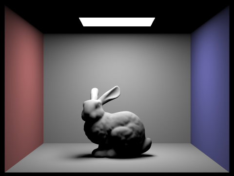
1,024 camera samples/pixel · 4 light samples · maximum depth 1 · 480 × 360
Depth 1 accumulated view; visible emitter is included.

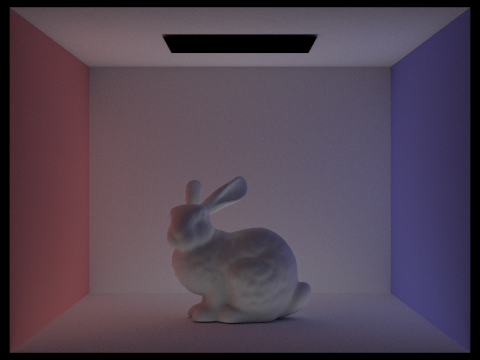
1,024 camera samples/pixel · 4 light samples · maximum depth 5 · 480 × 360
Separate render with primary direct light and visible emission excluded; no PNG subtraction.
Accumulated and isolated bounces · CBbunny.dae
Left: accumulated through depth m (isAccumBounces=true). Right: isolated mth bounce (isAccumBounces=false). At m=0 both modes return visible emission, so the same saved native output is reused.
Maximum depth m = 0

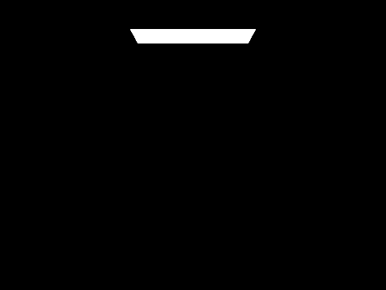
1,024 camera samples/pixel · 4 light samples · maximum depth 0 · 480 × 360
1,024 camera samples/pixel · 4 light samples · maximum depth 0 · 480 × 360
Shared depth-zero emission output.
Maximum depth m = 1
1,024 camera samples/pixel · 4 light samples · maximum depth 1 · 480 × 360

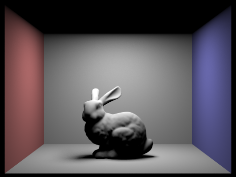
1,024 camera samples/pixel · 4 light samples · maximum depth 1 · 480 × 360
Maximum depth m = 2

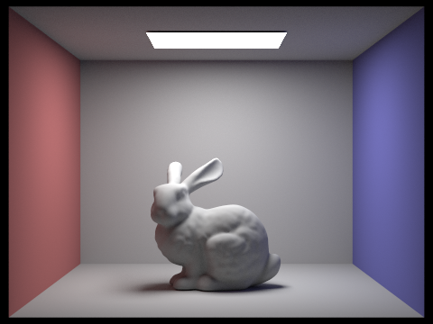
1,024 camera samples/pixel · 4 light samples · maximum depth 2 · 480 × 360

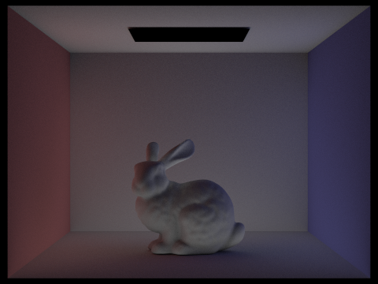
1,024 camera samples/pixel · 4 light samples · maximum depth 2 · 480 × 360
Maximum depth m = 3

1,024 camera samples/pixel · 4 light samples · maximum depth 3 · 480 × 360

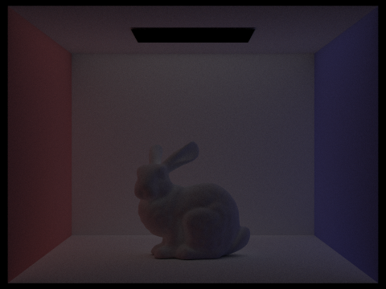
1,024 camera samples/pixel · 4 light samples · maximum depth 3 · 480 × 360
Maximum depth m = 4

1,024 camera samples/pixel · 4 light samples · maximum depth 4 · 480 × 360

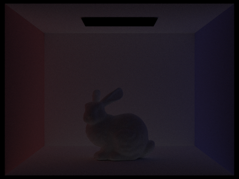
1,024 camera samples/pixel · 4 light samples · maximum depth 4 · 480 × 360
Maximum depth m = 5
1,024 camera samples/pixel · 4 light samples · maximum depth 5 · 480 × 360

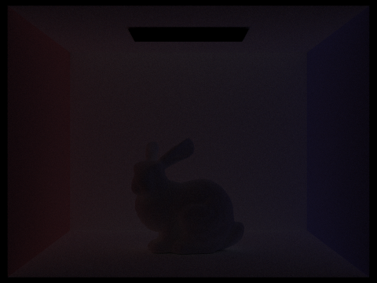
1,024 camera samples/pixel · 4 light samples · maximum depth 5 · 480 × 360
Russian Roulette · Maximum-depth series
CBbunny.dae · accumulated output · continuation probability 0.65 after the guaranteed first indirect step. Low depth limits still apply; m=0 and m=1 do not trace indirect paths. Matching saved outputs from the accumulated series are reused.
1,024 camera samples/pixel · 4 light samples · maximum depth 0 · 480 × 360
1,024 camera samples/pixel · 4 light samples · maximum depth 1 · 480 × 360
1,024 camera samples/pixel · 4 light samples · maximum depth 2 · 480 × 360
1,024 camera samples/pixel · 4 light samples · maximum depth 3 · 480 × 360
1,024 camera samples/pixel · 4 light samples · maximum depth 4 · 480 × 360

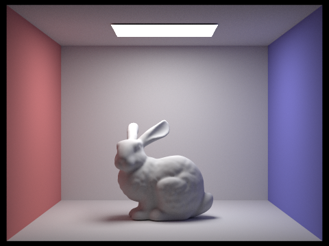
1,024 camera samples/pixel · 4 light samples · maximum depth 100 · 480 × 360
Camera-sample series · Four light rays
CBbunny.dae · accumulated direct + indirect illumination · maximum depth 5. Fixed sampling was verified at every pixel; early adaptive termination was disabled for this comparison.

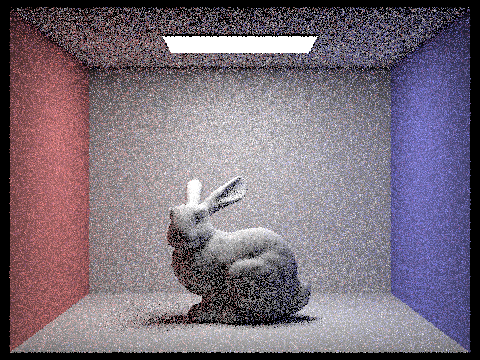
1 camera samples/pixel · 4 light samples · maximum depth 5 · 480 × 360

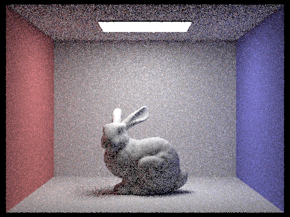
2 camera samples/pixel · 4 light samples · maximum depth 5 · 480 × 360

4 camera samples/pixel · 4 light samples · maximum depth 5 · 480 × 360

8 camera samples/pixel · 4 light samples · maximum depth 5 · 480 × 360

16 camera samples/pixel · 4 light samples · maximum depth 5 · 480 × 360

64 camera samples/pixel · 4 light samples · maximum depth 5 · 480 × 360
1,024 camera samples/pixel · 4 light samples · maximum depth 5 · 480 × 360
Part 5: Adaptive Sampling
Both scenes use a 2,048-sample maximum, batch size 64, tolerance 0.05, 1 sample per light, and maximum depth 5. The maximum is a cap; pixels can stop earlier. In the native rate maps, blue indicates lower sample counts and red higher counts.
CBbunny.dae

2,048 maximum camera samples/pixel · batch 64 · tolerance 0.05 · 1 sample/light · maximum depth 5 · 480 × 360

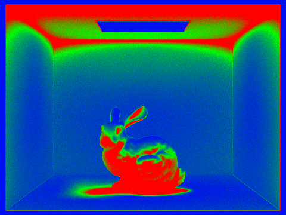
2,048 maximum camera samples/pixel · batch 64 · tolerance 0.05 · 1 sample/light · maximum depth 5 · 480 × 360
CBspheres_lambertian.dae

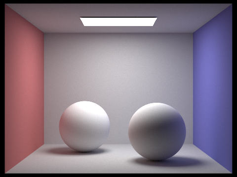
2,048 maximum camera samples/pixel · batch 64 · tolerance 0.05 · 1 sample/light · maximum depth 5 · 480 × 360

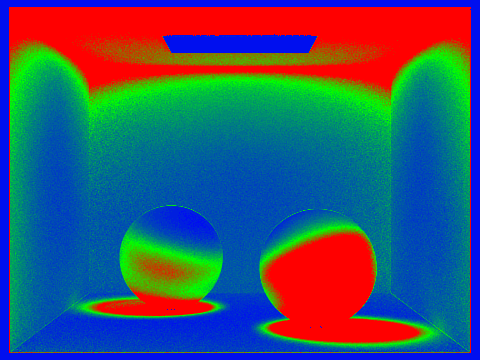
2,048 maximum camera samples/pixel · batch 64 · tolerance 0.05 · 1 sample/light · maximum depth 5 · 480 × 360
Recorded sample counts
Measured sample counts from these renders. These percentages do not measure runtime speedup.
| Scene | Minimum | Maximum | Mean spp | Render (s) |
|---|---|---|---|---|
| CBbunny | 64 | 2,048 | 664.22 | 136.04 |
| CBspheres_lambertian | 64 | 2,048 | 825.68 | 122.55 |
8 threads · 480 × 360 · one run per scene. Times are the renderer-reported elapsed values, measured under shared machine load; no matched uniform-sampling runtime comparison was performed.
Remaining report work
- Student-authored overview and explanations are still missing in both drafts.
- Review all prose against the required prompts in each part; supporting observation prompts are labeled separately.
- Assemble the final index page, include its public website link at the top, and verify publication.
- Export the final PDF and check every image, caption, and page.
- If applicable, add a student-authored collaboration paragraph; extra credit requires a separate Part 6 with evidence.
Native PNG files are unchanged. Draft organization and pushed assets do not establish final report or submission acceptance.